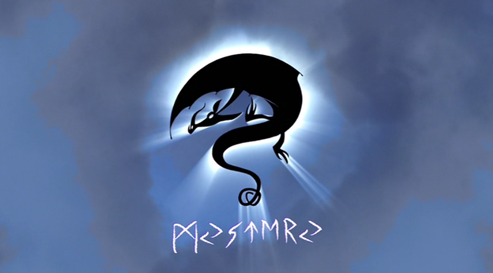
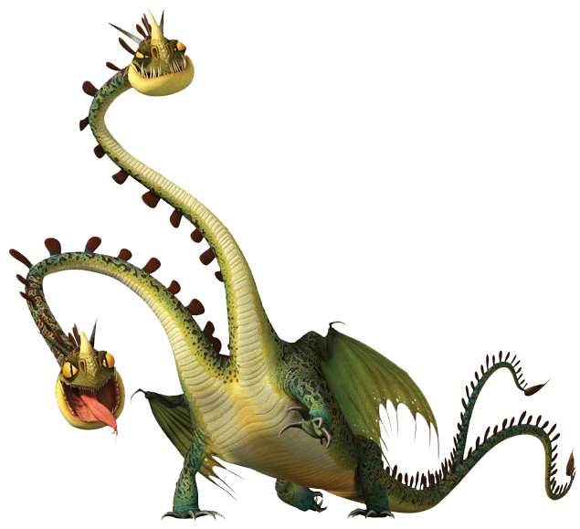

Mystery Class Dragons
Little is known about the Mystery Class dragons, due to their stealthy and sneaky nature. Dragons in this class are generally more feared than those in other classes. This Class tends to include the most diverse and interesting range of dragons out of all, most of which exhibit extremely rare and unique traits.
The dragon species included are:
Changewing
(changewing)
Description:
Changewing’s camouflaging skills are second to none, allowing them to blend in with rocks, trees, foliage, and even buildings. Additionally, Changewings often change colors based on their moods and surroundings. Instead of fire, they shoot hot, corrosive acid that burns through wood and rocks. They are also extremely agile and fast, even when moving along the ground. Changewings have a social structure similar to a lion pride. The female Changewings do most of the hunting and defense
Characteristics:
Changewings are usually red or green. They have teeth protruding out their lip from their lower jaw and yellow eyes. They possess a pair of horns that protrude from the back of their heads, a single horn on their nose, and a pair of antennae with leaf-like lobes. The spines on the Changewings are also leaf-like in shape. Their wings are red or green with yellow edges.
15.96 meters long & 2.54 meters tall
How to train them:
Changewings enjoy mimicry, so if one tries to mimic them, be it by their noises or their movements, they will find the individual fascinating. As mentioned in Incognito's description, by saving a Changewing's life, it will be fiercely loyal to you.
Boneknapper
(boneknapper)

Description:
This Mystery Class scavenger covers itself in bones to shield its delicate body. Its choice of armor makes it unpopular with other Dragons!
The Boneknapper is well-protected in its armor while it gets close and delivers a potent stream of fire to its fleeing opponents.
Characteristics:
Boneknappers are bipedal dragons with only one pair of wings and no forearms. Their ubiquitous bone armor is typically dirty white or light gray. Their dominant skin color appears to be olive green, though individuals with more vibrant colors do exist. Boneknappers have a penchant for very specific bones, particularly the skull of an unidentified dragon species.
How to train them:
To train a Boneknapper, one must give it whatever it desires. It will then become like "an overgrown puppy dog".
Zippleback
(zippleback)
Description:
The Zippleback is one of the largest dragons you may ever encounter. It's unmistakable with its twin heads. The heads are distinct, with separate thoughts and different personalities. Like most dragons, Zipplebacks can fly, but their wings are small and they spend most of their time on the ground. Zipplebacks are solitary, preferring to hunt alone. They come out after sundown, prowling dark forests for victims. The attack of a Zippleback is like no other. Instead of breathing fire, a Zippleback makes explosions. One head breathes gas, and the other head lights it.
Characteristics:
This dragon has two long, serpentine necks with rounded spikes from head to tail. These spikes can 'zip' together, in order to create the illusion of one neck. At the end of the necks, are two short heads. The Zippleback has a large horn on each nose, and two thinner horns on top of each head. Like most dragons, they have yellow reptilian eyes. The teeth in their lower jaw seem to be longer than the ones in the upper jaw, sticking out. They also have two tails, which can also 'zip' together. The end of each tail possesses a fin-like structure shaped like an arrowhead. They have short, but strong legs with four sharp claws. The Zippleback is probably one of the longest of the medium-sized dragons, if not the biggest.
21.59 meters long & 2.46 meters tall
How to train them:
To train a Zippleback, you must feed both heads at once, then play with the dragon to keep it occupied. Another way to train one is to save a Zippleback's life. If this is done, they will be completely loyal to the person no matter what until they can repay the favor.
Snaptrapper
(snaptrapper)
Description:
Snaptrapper the Venus flytrap of dragons, Upon opening their triple-split jaws, Snaptrappers release a sweetly intoxicating scent, stimulating hunger in nearby dragons and humans. When the unlucky victim goes foraging through the deceitful dragon's leaf-like wings and fins, the Snaptrapper unfurls and strikes. Although they are best known for producing the alluring aroma for unwitting prey, Snaptrappers can also exude a noxious odor to ward off would-be predators. One whiff of this pungent reek of putrefaction is enough to scare of even the most starving Titan Wing.
Characteristics:
The Snaptrapper is a dragon that has four heads, each with three jaws. Their tails are forked like that of the Hideous Zippleback, and they look somewhat like the latter as well. Their unique, frightening jaws open up in a way that resembles a flower blooming, and the spines on their necks, body, and tail look similar to leaves. All four heads of the Snaptrapper have three tongues; these tongues each resemble the stamen of a flower, as it is the Snaptrapper's tactic to resemble a plant of some kind to lure prey in close, or to help them hide from the dragon's few potential predators. They are one of the larger species of dragons and have very long necks and tails. They also appear to have eyelash-like ridges above their eyes, making them appear feminine.
20.73 meters long & 2.87 meters tall
How to train them:
Just like Hideous Zipplebacks, Snaptrappers' trust can be earned if all heads are treated in equal measure. They can also be tamed if approached while playing in mud.
Contact us
Contact no.: 0991-482-1222
Email: elijahlaqui@gmail.com
Facebook: Elijah Kean Laqui